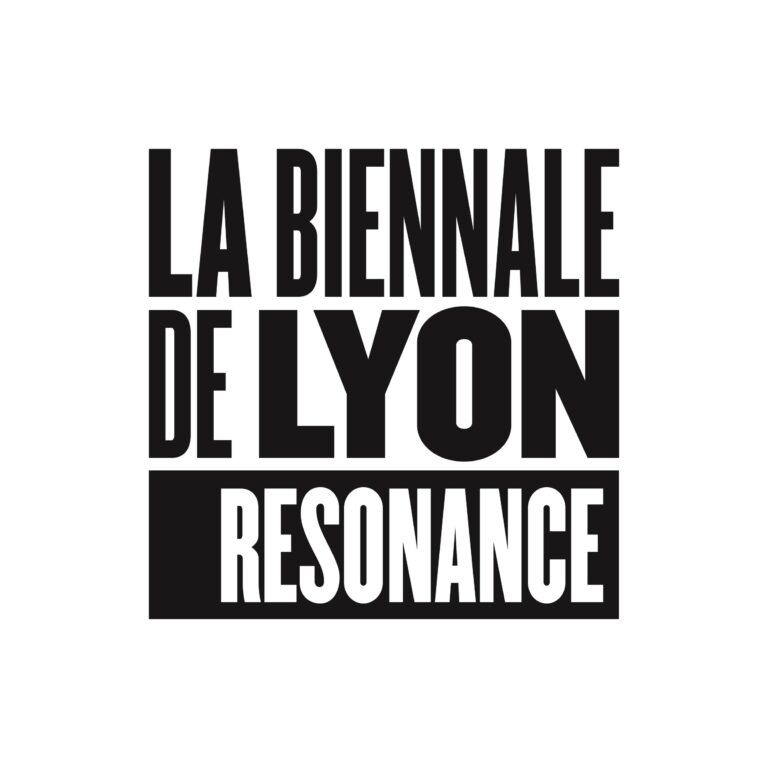
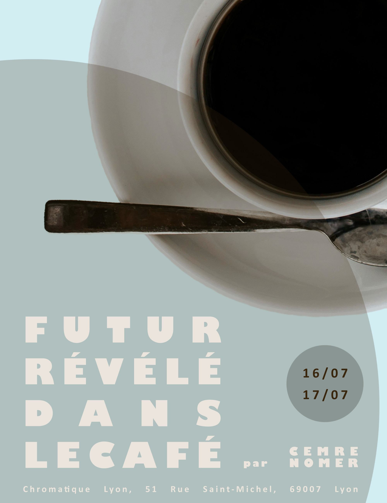
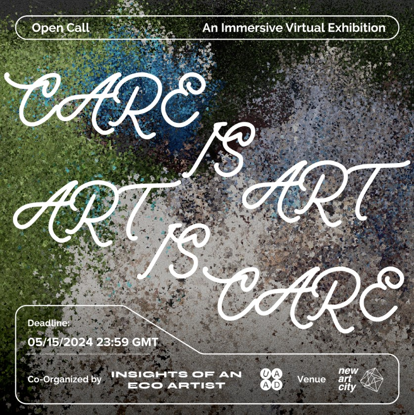
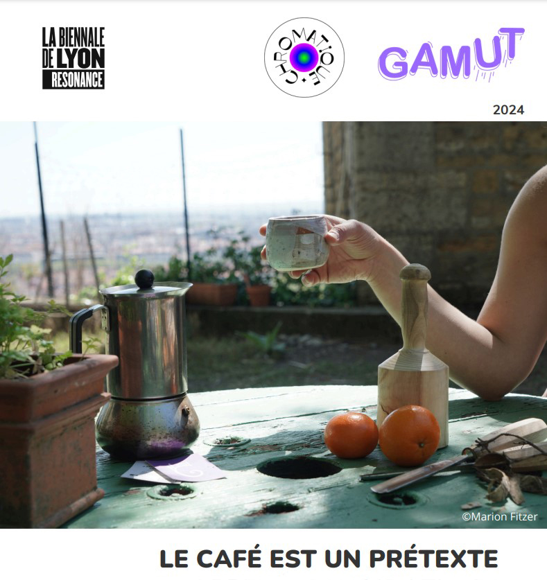
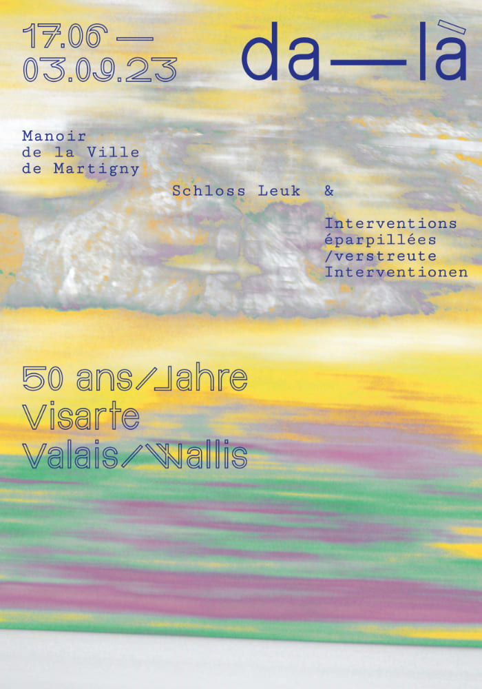
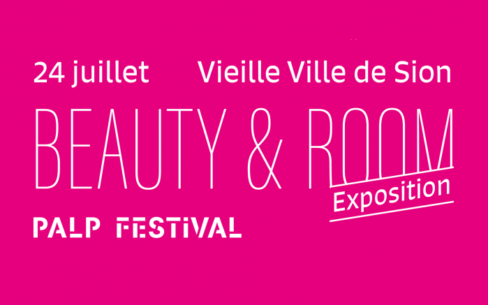

2024
Contemporary Art Biennale of Lyon, "Résonance"
Curated By : Isabelle Bertolotti, Thierry Raspail, Hans Op de Beeck, Jean-Hubert Martin
https://www.labiennaledelyon.com/en/biennale/17e-biennale-dart-contemporain-2024/resonance/opening-le-cafe-est-un-pretexte
«Since 2003, the Biennale de Lyon has brought together the most dynamic actors on the regional cultural scene under the generic and unifying term of Résonance during its internationally renowned event. It echoes the events organized by art centers, galleries, and cultural institutions in the Auvergne-Rhône-Alpes region, as well as those proposed by associations or artist collectives that wish to align with the theme of the Biennale. Over the years, Résonance has gathered numerous venues in the fields of contemporary art, literature, dance, theater, music, and cinema. This has resulted in a unique abundance in the world of biennales: from around thirty events in 2003, Résonance grew to more than 250 exhibitions, performances, concerts, screenings, and shows in 2022. This dynamic demonstrates the growing influence and territorial anchoring of contemporary art in the Auvergne-Rhône-Alpes region.»
Futur Révélé Dans le Café
Co-Curated by GAMUT, Chromatique, Mercredi Productions
" Futur révélé dans le café " est un workshop organisé par l'artiste turco-suisse Cemre Nomer, avec pour objectif de plonger les participant·es dans l'univers fascinant de la cafédomancie. Cette ancienne pratique divinatoire, qui trouve ses origines dans les rites chamaniques, sera présentée dans le contexte de l'exposition { Le café est un prétexte }. Lors de ce workshop, les participant·es auront l'occasion de découvrir l'art du café turc ; apprenez à préparer un café turc authentique en respectant les traditions et techniques ancestrales qui ont font une boisson unique, et l'interprétation du marc de café ; découvrez comment lire et interpréter les motifs formés par le marc de café. Cette pratique, autrefois réservée au chamans, vous permettra de révéler des aspects cachés de votre caractère et d'explorer des questions sociologiques à travers une perspective contemporaine.
Care is Art, Art is Care
Co-Curated by Insights of an Eco Artist & UAAD - Underground Art and Design
«In a society where kindness and empathy can be undervalued, we are in search of artists who demonstrate a strong dedication to enriching our world through their creative expression. "Care is Art, Art is Care" is not just an exhibition but an acknowledgement to the transformative power of art in harboring empathy, understanding, and change. »
Le Café est un Prétexte
Chromatique Lyon & Association Gamut, Lyon
"Coffee, whether as a place or as a beverage, is a quintessential actor in social life. Deeply embedded in the city as a place for debate and thought, it is also a place of life and ephemeral, astonishing encounters in the collective imagination, fueled by films and novels. It is a place where conversations are exchanged, ranging from philosophical to trivial. The beverage, on the other hand, crystallizes numerous cultural traditions, all of which share the common point of coffee consumption as a social act. As the writer and director Luciano De Crescenzo said, 'coffee is a pretext.' A reason for meeting and exchanging, it plays an important role in organizing our daily lives. Neighborhood cafés see regulars and passersby cross paths, and the coffee break has become a crucial ritual in the workplace. Through this invitation to exhibit, Gamut and Meeercredi Productions wish to offer an artist or a collective the opportunity to invest in the exhibition space of Chromatique, a cultural café nestled in the Guillotière district."
Curated by : Lola Carrel, Stéphanie Gerbaud, Fati Ghamiz.
2023
Da Là - Exposition pour les 50 Ans de Visearte Valais et Wallis
Manoir de Ville, Martigny
« In 2023, Visarte Valais and Visarte Wallis will celebrate their 50th anniversary. To celebrate this jubilee, these two associations are setting up the da-là artistic project throughout the canton. The project aims to be contemporary, festive, open, innovative, creative and exceptional. It aims to surprise and excite the public, passers-by and visitors. »
Curated by : Julia Taramarcaz, Nicolas Marolf, Carlo Schmidt.
2021
Exposition de Travaux de Diplômes et de Fin d'année de l'EDHEA
Halles Usego, Sierre
« In June 2021, around sixty young artists and graphic designers will complete their training at EDHEA. For the first time, the School of Design and High School of Art of Valais has chosen to present all of their diploma or end-of-year work in one place. Whether they have completed the CFC/MP Graphic Designer, Art & Design Foundation course, Specialized Maturity in Visual Arts, Bachelor in Visual Arts or MAPS – Master of Arts in Public Spheres, all of them will exhibit their work at Halles Usego. »
Beauty & Room
Palp Festival, Vieille Ville de Sion
« On Saturday July 24, the ephemeral exhibition Beauty & Room, organized by the PALP Festival, unfolds in 14 spaces in the old town of Sion, inviting you to discover both proposals by artists and new places. »
2020
LYRICAL GRAVITY
Online Exhibition
« LYRICAL GRAVITY is a multiplayer VR artwork for seven spectators that approaches Virtual Reality as a happening. By speculating on a fictional kind of gravity, it makes use of pop songs and their lyrics as psychoacoustic gates for triggering embodied memories and dormant affects, while leading the users on a sensorial somatic experience into the realm of instinct, intuition and desire. »